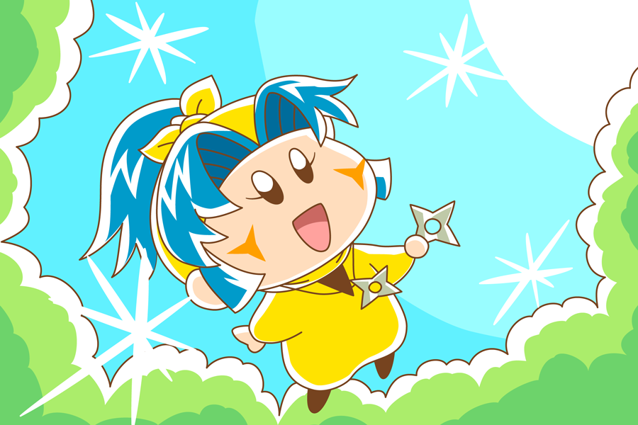

７月から原稿作成や本業のお仕事でばたばたしていて、ほとんどサイト更新ができませんでしたm(_ _)m。その後原稿作成は完了し、お仕事ももうすぐ落ち着くはずですので、秋になったらたくさんサイト更新していきたいと思います！ 私の中にあるミルモ魂は以前のままですのでご安心を～。
今回は、リハビリとして何の変哲もないヤマネちゃんを描きました。約１か月ぶりぐらいにPCでお絵描きしたので、Illustratorの使い方をいくつか忘れちゃっていました。ブランクって怖いですね・・。
８月も後半になってびっくりするぐらいに涼しくなり、すでに夏が終わってしまった感じもしますが、コントラスト高めのぎらぎらした色で夏らしさを表現したつもりです。この色使いは描いていて楽しかったので（影も描かなくて済むし^^;）、しばらくこの色使いで他の絵も描いてみようかなと思います。
(2015/8/30)